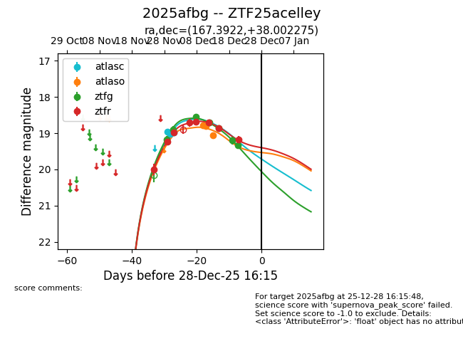
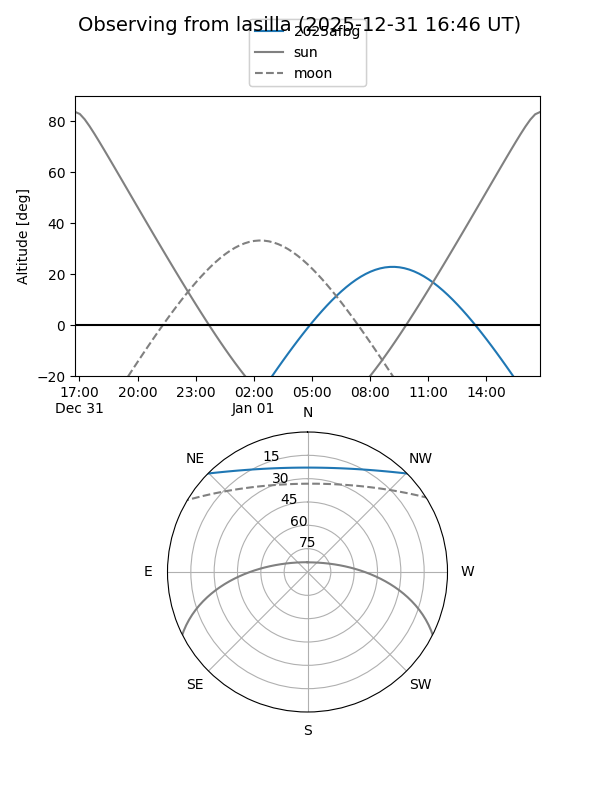
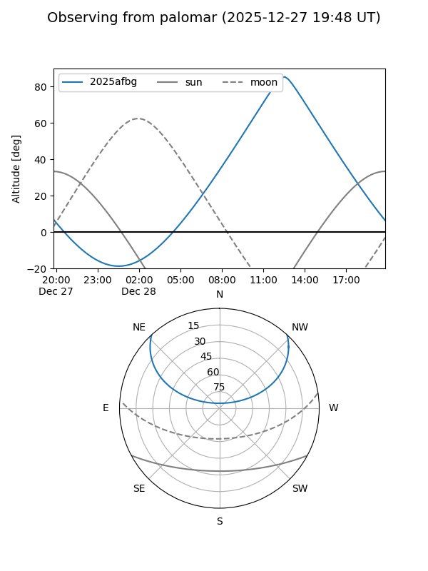
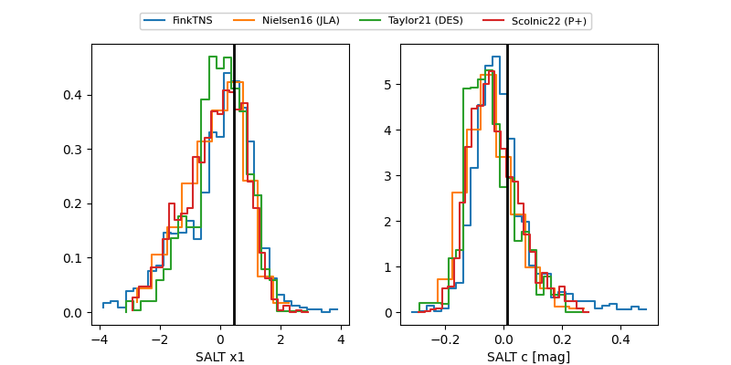

2025afbg
Target 2025afbg at 2025-12-21 12:17
Aliases and brokers:
FINK: fink-portal.org/ZTF25acelley
Lasair: lasair-ztf.lsst.ac.uk/objects/ZTF25acelley
ALeRCE: alerce.online/object/ZTF25acelley
TNS: wis-tns.org/object/2025afbg
YSE: ziggy.ucolick.org/yse/transient_detail/2025afbg
alt names
ZTF25acelley (ztf,fink_ztf)
2025afbg (tns,yse)
Coordinates:
equatorial (ra, dec) = 167.3922,+38.00228
equatorial (HMS+DMS) = 11:09:34.13,+38:00:08.19
galactic (l, b) = (179.5147,+66.04998)
Flags:
Photometry:
last atlasc=18.97, atlaso=19.05, ztfg=19.34, ztfr=18.86
3 atlasc, 3 atlaso, 7 ztfg, 7 ztfr detections
Lightcurve

Visibility


Additional plots
